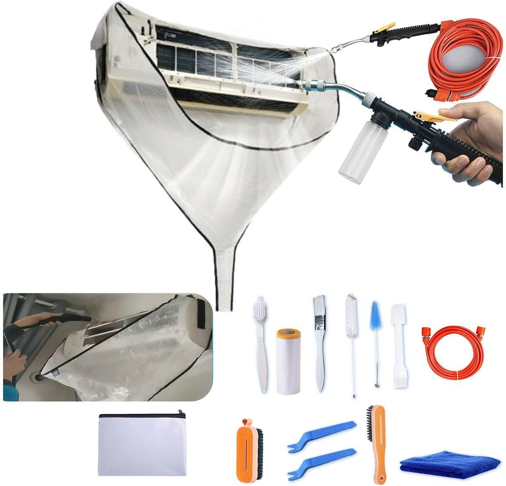

KIKEPILM
Kit Pulizia Climatizzatore Split, Telo per Unità a Parete e Pompe di Calore (Bianco, C)
89,80 €
Prezzo KIKEPILM, IVA inclusa
| Marca | KIKEPILM |
| Modello (ASIN) | B0GZQS2SYY |
| Colore | Bianco |
| Taglia | C |
| Prezzo | 89,80 € |
| Valuta | EUR |
Acquisto, spedizione e reso avvengono tramite Amazon.
Informazioni su questo articolo
- Aiuta a rimuovere lo sporco dal climatizzatore split e a mantenere un flusso d’aria e un raffreddamento efficienti.
- Il telo a 360° avvolge l’unità a parete, convoglia l’acqua e protegge meglio pareti e pavimenti durante la pulizia.
- La manutenzione regolare può favorire prestazioni stabili, limitare consumi inutili e prolungare la vita utile dell’apparecchio.
- Il telo si installa rapidamente e si ripone in poco spazio, ideale per la manutenzione stagionale dei climatizzatori split.
- Con spazzole, tubo e telo protettivo, il set aiuta a rimuovere gli accumuli di polvere e a mantenere più gradevole l’aria interna.